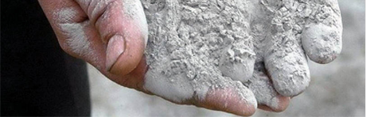

Пенобетон – это строительный материал, обладающий несколькими несомненными достоинствами, основными из которых являются легкость, паропроницаемость и высокие теплоизоляционные свойства. Но вот оштукатуривание стен, сложенных из пенобетона, представляет некоторую трудность. Дело в том, что этот строительный материал имеет плохую адгезию.
Если пренебречь некоторыми техническими нюансами, известными специалистам-отделочникам, самостоятельная штукатурка пеноблоков может отнять у вас уйму времени,нервных клеток и денег. В зависимости от вашего опыта и знания специфики оштукатуривания стен из пенобетонных блоков результаты ваших упражнений со шпателем могут - как порадовать, так и огорчить. Огорчение, как правило, наступает предательски поздно. Зачастую, когда стены уже зашпатлеваны и покрашены или оклеены обоями. Именно поэтому перед началом работ стоит четко понимать как штукатурить пеноблок, чем обработать стены, чтобы в дальнейшем штукатурка не отслоилась и т.д.
Как правильно штукатурить пеноблоки
При оштукатуривании поверхностей из пенобетона необходимо придерживаться нескольких довольно простых правил:
- Если пеноблоки литые, то необходимо применять специальную штукатурную сетку. Также эту сетку следует применять и в случае резанных пеноблоков в местах концентрации напряжений: на углах зданий, под подоконниками и т.д. Подробнее о литьевой и резательной технологии.
- Чтобы сохранить высокую паропроницаемость пеноблоков и их теплоизолирующие свойства, толщина наружного слоя штукатурки не должна превышать 5-10 мм., а внутреннего 10-20 мм. Также в этом случае обеспечивается равномерность возрастания теплопроводности, и влага «экспрессом», нигде не задерживаясь, будет уходить из дома. В противном случае есть риск, что она может задержаться под наружным слоем штукатурки, что приведет со временем к его отслоению, а также возникновению плесневых пятен.
Сухие
строительные
смеси

Подробнее
Группа компаний "БЕСТО", являющаяся одним из ключевых игроков на Московском цементном рынке, в 2011 году запустила свою первую линию по производству сухих строительных смесей в п. Нахибино, Красногорского р-на Московской области. Первоначально открытие завода и разработка рецептуры были нацелены на обеспечение наших постоянных покупателей цемента специальными видами сухих смесей.
Смотрите также
Обзорная статья о развитии рынка монолитного бетонирования в России
В последнее десятилетие монолитное строительство стало одной из самых развивающихся отраслей в России. Прогрессирующий рост цен...
25 мая 2016
Обзорная статья о развитии рынка монолитного бетонирования в России
В последнее десятилетие монолитное строительство стало одной из самых развивающихся отраслей в России. Прогрессирующий рост цен...
25 мая 2016
Обзорная статья о развитии рынка монолитного бетонирования в России
В последнее десятилетие монолитное строительство стало одной из самых развивающихся отраслей в России. Прогрессирующий рост цен...
25 мая 2016Статьи
от 1 800
от 1 800
от 1 800